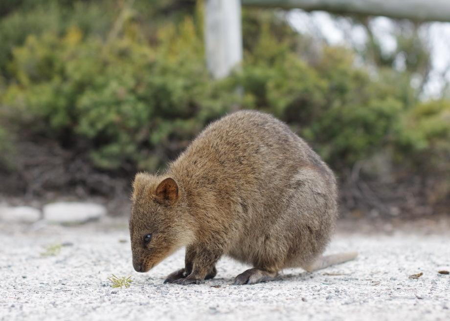

Hi,my name is 黃宇廷 Huang Yu Ting, but you can also call me Billy.
My hobbies is archery(Recurve bow). For me, this sport is not merely
draw and release. It cultivate my patience and comcentration. Every
details are important. Nocking,stance,anchor,aiming and follow through
all affect how accurate you are. I also recommend everyone experience it.
Although at the beginning it will be diffcult,once beginners try their best to
pratice, they will find how interesting it is.
 A quokka weighs 2.5 to 5.0 kg (5.5 to 11.0 lb) and is 40 to 54 cm (16 to 21 in) long with a 25-to-30 cm-long (9.8-to-11.8 in) tail, which is quite short for a macropod. It has a stocky build, well developed hind legs, rounded ears, and a short, broad head. Its musculoskeletal system was originally adapted for terrestrial bipedal saltation, but over its evolution, its system has been built for arboreal locomotion. Although looking rather like a very small kangaroo, it can climb small trees and shrubs up to 1.5 metres (4 ft 11 in). Its coarse fur is a grizzled brown colour, fading to buff underneath.The quokka is known to live for an average of 10 years. Quokkas have a promiscuous mating system. After a month of gestation, females give birth to a single baby called a joey. Females can give birth twice a year and produce about 17 joeys during their lifespan. The joey lives in its mother's pouch for six months. Once it leaves the pouch, the joey relies on its mother for milk for two more months and is fully weaned around eight months after birth. Females sexually mature after roughly 18 months. When a female quokka with a joey in her pouch is pursued by a predator, she may drop her baby onto the ground; the joey produces noises, which may serve to attract the predator's attention, while the mother escapes.